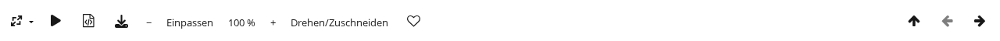

Die Fotoseite zeigt ein einzelnes Foto.

Mit Drehen/Zuschneiden lässt sich das Foto drehen und zuschneiden, siehe Foto drehen und zuschneiden.
Die Fotoseite zeigt jedes Foto zunächst so groß, wie es in die Fläche links neben den Angaben passt. Kleine Fotos werden dafür vergrößert und wirken dann etwas unscharf. Zum Vergrößern und Verkleinern stehen in der Leiste über dem Foto vier Schaltflächen:
Dasselbe geht mit den Tasten +, - und 0 (Einpassen) sowie mit gedrückter Strg-Taste (auf dem Mac Cmd) und dem Mausrad über dem Foto. Ein vergrößertes Foto lässt sich mit gedrückter Maustaste, mit dem Mausrad oder mit den Bildlaufleisten verschieben.
Im eingepassten Foto führt ein Klick in das linke Viertel zum vorigen Foto, in das rechte Viertel zum nächsten Foto und in den oberen Streifen dazwischen zum Album. Solange das Foto vergrößert ist, passiert bei einem Klick nichts davon. Die Vergrößerung bleibt nicht erhalten: jedes Foto öffnet sich wieder eingepasst.
Auf einem Tablet oder Smartphone und in einem schmalen Browserfenster gibt es nur Einpassen und 100 %. Auf Tablet und Smartphone wird das Foto wie gewohnt mit zwei Fingern vergrößert.